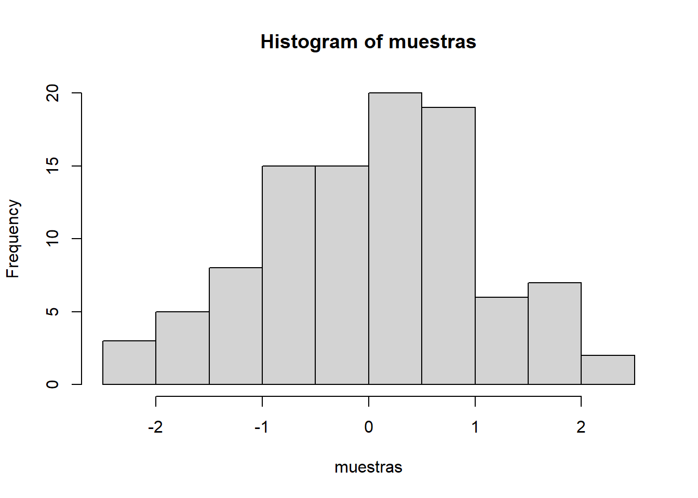

Nota: Este programa de estudios estará en construcción.
2025 | 8 | 23 Última actualización: 2025-08-25
Introducción práctica y centrada en las habilidades para utilizar software de programación de código abierto (R, R-studio y R Markdown) en varios aspectos de la investigación en ciencias sociales. El curso cubre la programación básica en R, la manipulación de datos, la creación de gráficos y el uso de R para crear manuscritos correctamente citados y gestionando las referencias y fuentes utilizadas.
Requisitos especiales: NINGUNO
🎯 Metodología general
El curso se desarrolla bajo el enfoque learning by doing, donde cada sesión combina explicación y práctica inmediata.
Talleres de búsqueda en catálogos, bases de datos y gestores bibliográficos.
Ejercicios de citación en distintos estilos, incluyendo citación automatizada en RMarkdown.
Uso directo de bases de datos reales (INEGI, ONU, Banco Mundial).
Manipulación, transformación y análisis de variables en R.
Elaboración de reportes reproducibles en RMarkdown.
Nos reunimos dos veces por semana en el laboratorio de computación. Cada clase implicará una exposición sobre conceptos de la lógica y metodología de la investigación y casos prácticos tipo taller. Al completar las tareas, las y los estudiantes crearán un portafolio de scripts de codificación de R que demuestre una variedad de habilidades de comunicación y análisis de fuentes y datos. El proceso de aprender a codificar requiere paciencia, tiempo y práctica. Se espera que las y los estudiantes practiquen la codificación fuera del horario de clase cada semana.
El curso se divide en dos grandes unidades.
📚 Unidad 1. Consulta de fuentes académicas, científicas y hemerográficas
Objetivo de la unidad: Que las y los estudiantes desarrollen habilidades para localizar, seleccionar, evaluar, organizar y citar fuentes de manera ética y rigurosa, utilizando herramientas digitales y gestores bibliográficos, y que aprendan a citar de manera automatizada en RMarkdown para elaborar reportes y trabajos académicos reproducibles.
📊 Unidad 2. Lectura numérica del mundo: consulta, manipulación y análisis de datos
Objetivo de la unidad: Que las y los estudiantes adquieran competencias para comprender, manipular, transformar y analizar datos provenientes de encuestas, censos y registros administrativos, utilizando R y RMarkdown para la generación de reportes reproducibles con análisis de variables que integren fuentes y citas automatizadas.
La rúbrica de calificación se encuentra a continuación:
| Tarea | Puntos | |
|---|---|---|
| 3 exámenes parciales | 20 | 60 |
| N tareas | 25 | 25 |
| Exposición | 15 | 15 |
| Total | 100 |
Se deberán entregar y realizar en tiempo y forma en la plataforma classroom CFLNM-0032-2026 (Solicita acceso)
El curso tiene una duración de 15 semanas. Es una clase presencial y se espera que las y los estudiantes participen en todos los aspectos de la clase. Esta clase implica el aprendizaje de habilidades de programación en R para la visualización y análisis de datos. Se asume que las y los estudiantes pueden no poseer habilidades previas en esta área, por lo que el curso tiene un componente de formación aplicada. El tiempo de clase involucrará una mezcla de actividades, incluyendo conferencias, trabajo en grupo, actividades de codificación aplicadas, presentaciones y discusiones.
| Semana | Fecha | Tema | Lecturas |
|---|---|---|---|
| S0 L: | 18 de agosto | Clase 1. Presentación del curso. 🔹 Actividad práctica: dinámica rompehielo: cada alumna menciona qué entiende por “fuente” y un ejemplo cotidiano. 🔹 Ejemplo: contrastar opiniones de redes sociales vs. un artículo científico. 🔹 Tarea: escribir una breve reflexión: ¿qué espero aprender y cómo lo aplicaré en mi carrera? |
Ninguna |
| S0 J: | 21 de agosto | Clase 2. Ciencias sociales y la consulta de fuentes como
soporte de argumentos. 🔹 Ejemplo práctico: comparar un argumento basado en sentido común vs. uno sustentado en datos de encuesta (INEGI). 🔹 Taller: identificar en un artículo académico qué fuentes sostienen sus conclusiones. 🔹 Tarea: traer un ejemplo de argumento en redes/noticias y contrastarlo con evidencia científica. |
Bunge 2000, pp.3-13 |
| S1 L: | 25 de agosto | Clase 3. Tipos de fuentes y metabuscadores. 🔹 Ejercicio práctico: clasificar un set de documentos (ley, encuesta, paper, noticia, blog, tesis) en primarias, secundarias y terciarias. 🔹 Taller: búsqueda en metabuscadores (Google Scholar, Scielo, JSTOR). 🔹 Tarea: localizar un artículo académico en JSTOR y guardarlo en PDF. |
Cap. 1 Martínez Valdés, Huerta Silva, Lara Escalante 2024, pp.11-59 |
| S1 J: | 28 de agosto | Clase 4. Tipos de búsqueda + teoría de conjuntos (diagramas
de Venn) para algoritmos de búsqueda y parámetros. 🔹 Ejemplo práctico: diseñar diagramas de Venn para búsquedas de “violencia contra las mujeres” en diferentes bases de datos. 🔹 Taller: crear ecuaciones de búsqueda con AND, OR, NOT. 🔹 Tarea: elaborar 3 ecuaciones de búsqueda distintas sobre un mismo tema. |
Rendón 2017;UNAM |
| S2 L: | 1 de septiembre | Clase 5. Introducción a búsquedas sistemáticas y revisiones
sistemáticas de literatura. 🔹 Ejemplo práctico: diferencias entre revisión narrativa, revisión sistemática y meta-análisis. 🔹 Taller en R: diseñar un protocolo simple de revisión (palabras clave + criterios de inclusión/exclusión). 🔹 Tarea: elaborar un cuadro con una estrategia de búsqueda sistemática sobre un tema elegido. |
Escoto 2021; Universidad de Navarra;UNAM 2022 |
| S2 J: | 4 de septiembre | Clase 6. Construcción de base de datos a partir de revisión
sistemática de artículos y noticias. 🔹 Ejemplo práctico: búsqueda de noticias sobre migración/violencia en El Universal, Infolatina o Google News. 🔹 Taller en R: crear un data.frame con artículos de prensa (título, autor,
fecha, medio, tema).🔹 Actividad: marcar relevancia de cada nota (alta, media, baja). 🔹 Tarea: entregar una base de 5–10 noticias sobre un tema de interés personal. |
Ninguna |
| S3 L: | 8 de septiembre | Clase 7. Qué hacer con las fuentes: selección, organización
y fichado. 🔹 Ejemplo práctico: fichar un artículo académico (tema, autor, conclusión, cita). 🔹 Taller: crear una base de datos de referencias en R con tibble o
data.frame.🔹 Actividad: uso básico de Zotero/Mendeley para guardar las fuentes. 🔹 Tarea: crear una mini-base con 5 fichas en R + 5 referencias en Zotero. |
Ninguna |
| S3 J: | 11 de septiembre | Clase 8. Ética académica, plagio, tipos de citas, estilos de
citación. 🔹 Ejemplo práctico: transformar un párrafo en cita directa, indirecta y paráfrasis, en APA y Chicago. 🔹 Taller: detectar y corregir plagio en un texto dado. 🔹 Actividad creativa: trivia rápida de citas correctas e incorrectas. 🔹 Tarea: citar correctamente 3 artículos en Zotero en dos estilos distintos. |
UNAM: Ética académica; UNAM: Citas APA |
| S4 L: | 15 de septiembre | FERIADO (No hay clase) | Ninguna |
| S4 J: | 18 de septiembre | Examen parcial 1 (Fuentes, búsqueda, ética y citación) | Material de clases previas |
| S5 L: | 22 de septiembre | Clase 9. Citación en RMarkdown. 🔹 Ejemplo práctico: insertar citas con .bib y generar
bibliografía automática.🔹 Taller: redactar un mini-ensayo en RMarkdown con al menos 3 citas automatizadas. 🔹 |
| Semana | Fecha | Tema | Lecturas |
|---|---|---|---|
| S5 L: | 22 de septiembre | Clase 10. Introducción a la estadística: población, muestra
y representatividad. 🔹 Ejemplo práctico: urna con canicas para simular muestra aleatoria. 🔹 Taller: diferenciar población vs muestra en encuestas de INEGI. 🔹 Tarea: redactar ejemplo propio de población/muestra. |
Cap. 9 [Gerring 2014] |
| S5 J: | 25 de septiembre | Clase 11. Fuentes de datos: encuestas, censos y registros
administrativos. 🔹 Ejemplo práctico: revisar ENVIPE, Censo de Población y registros penitenciarios. 🔹 Actividad: comparar ventajas y limitaciones de cada fuente. 🔹 Tarea: elegir un tema y señalar qué fuente lo mide mejor. |
Ninguna |
| S6 L: | 29 de septiembre | Clase 12. De los conceptos a las variables en ciencias
sociales. 🔹 Ejemplo práctico: de la teoría a la variable (violencia → hipótesis → concepto → variables). 🔹 Taller: tabla “teoría → hipótesis → concepto → variable”. 🔹 Actividad creativa: cada equipo transforma un concepto de interés en al menos 2 variables medibles. 🔹 Tarea: armar 3 variables a partir de un concepto propio. |
Cap. 6-7 [Gerring 2014] |
| S6 J: | 2 de octubre | Clase 13. Tipos de variables: cualitativas y
cuantitativas. 🔹 Ejemplo práctico: variables de ENSU (percepción de inseguridad vs. edad). 🔹 Actividad creativa: juego “clasifica la variable”. 🔹 Tarea: clasificar 10 variables de un dataset público. |
Cap. 6-7 [Gerring 2014] |
| S7 L: | 6 de octubre | Clase 14. Variables en R: vectores, data frames y
factores. 🔹 Ejemplo práctico: crear data.frame con características del grupo.🔹 Taller en R: manipular con mutate, filter y
select.🔹 Tarea: crear una base en R con 10 observaciones. |
Cap. 1-3 [Mendoza 2024] |
| S7 J: | 9 de octubre | Examen parcial 2 (población, muestra, fuentes de datos y variables). | Material de clases previas |
| S8 L: | 13 de octubre | Clase 15. Creación de variables derivadas en
R. 🔹 Ejemplo práctico: generar variable “juega tenis sí/no”. 🔹 Taller: if_else y
case_when.🔹 Tarea: crear 3 variables derivadas en R. |
Cap. 6-7 [Mendoza 2024] |
| S8 J: | 16 de octubre | Clase 16. Indicadores sociales: tasas, razones y
proporciones. 🔹 Ejemplo práctico: calcular tasa de desempleo con datos de INEGI. 🔹 Taller en R: tasas simples con dplyr.🔹 Tarea: entregar tabla con 3 tasas en R. |
Cap. 9 [Gerring 2014] |
| S9 L: | 20 de octubre | Clase 17. Teoría de la medición en ciencias
sociales. 🔹 Ejemplo práctico: analizar escala Likert. 🔹 Taller: validez y confiabilidad. 🔹 Tarea: proponer un indicador y justificar cómo medirlo. |
Cap. 10 [Gerring 2014] |
| S9 J: | 23 de octubre | Clase 18. Construcción de indicadores e
índices. 🔹 Ejemplo práctico: índice de bienestar con 3 variables. 🔹 Taller en R: estandarizar y sumar. 🔹 Tarea: entregar índice en R. |
Cap. 10 [Gerring 2014]; Cap. 11 [Mendoza 2024] |
| S10 L: | 27 de octubre | Clase 19. Visualización de datos: tablas y
gráficos. 🔹 Ejemplo práctico: interpretar tabla de violencia de género. 🔹 Taller en R: gráficos básicos con ggplot2.🔹 Tarea: entregar un gráfico sencillo. |
Cap. 11 [Mendoza 2024] |
| S10 J: | 30 de octubre | Clase 20. Reportes reproducibles en
RMarkdown. 🔹 Ejemplo práctico: generar reporte con texto + tabla + gráfico. 🔹 Taller: armar documento en RMarkdown. 🔹 Tarea: mini-reporte con indicador y cita automatizada. |
Cap. 13 [Mendoza 2024] |
| S11 L: | 3 de noviembre | Clase 21. Taller aplicado: integrar citas, indicadores y
visualizaciones en RMarkdown. 🔹 Ejemplo práctico: reproducir un reporte corto. 🔹 Actividad grupal: checklist de reproducibilidad. 🔹 Tarea: entregar borrador de reporte final. |
Cap. 13 [Mendoza 2024] |
| S11 J: | 6 de noviembre | Examen parcial 3 (estadística básica, indicadores y reportes reproducibles). | Material de clases previas |
| S12 L: | 10 de noviembre | Clase 22. Exposiciones estudiantiles I. 🔹 Presentación de variables e indicadores con RMarkdown preliminar. 🔹 Actividad: retroalimentación colectiva. |
Ninguna |
| S12 J: | 13 de noviembre | Clase 23. Exposiciones estudiantiles II. 🔹 Continuación de presentaciones. 🔹 Tarea: entregar versión preliminar de reporte final. |
Ninguna |
| S13 L: | 17 de noviembre | FERIADO (No hay clase) | Ninguna |
| S13 J: | 20 de noviembre | Clase 24. Política pública basada en
evidencia. 🔹 Ejemplo práctico: caso de política mal diseñada sin evidencia. 🔹 Debate: ¿qué pasa sin estadísticas confiables? 🔹 Tarea: reflexión sobre un indicador que guíe política pública. |
Lecturas del curso |
| S14 L: | 24 de noviembre | Clase 25. Síntesis aplicada: del dato al
argumento. 🔹 Ejemplo práctico: transformar un análisis de R en argumento académico. 🔹 Taller: cómo redactar hallazgos cuantitativos. 🔹 Tarea: redactar 1 cuartilla con hallazgos de su dataset. |
Ninguna |
| S14 J: | 27 de noviembre | Clase 26. Proyecto integrador – trabajo en
clase. 🔹 Actividad: preparar reporte final en RMarkdown (citas + variables + indicadores + visualizaciones). 🔹 Tarea: subir borrador de entrega final. |
Ninguna |
| S15 L: | 1 de diciembre | Clase 27. Exposiciones finales de proyectos
I. 🔹 Actividad: presentación de equipos. 🔹 Retroalimentación: discusión grupal. |
Ninguna |
| S15 J: | 4 de diciembre | Clase 28. Exposiciones finales de proyectos II y cierre del
curso. 🔹 Actividad: conclusiones colectivas sobre consulta de fuentes y lectura numérica. 🔹 Tarea final: entregar reporte definitivo en RMarkdown. |
Ninguna |
Se espera que las y los estudiantes asistan y participen en cada
clase.
Para tener derecho a evaluación es necesario tener un 80% de
asistencia.
Fechas de entrega Es muy importante entregar en tiempo y forma. No se aceptan trabajos atrasados, salvo justificación por enfermedad o problemas personales comunicados a tiempo. Es posible que puedas trabajar con anticipación, pero no se recomienda que te quedes atrás.
Debes enviar al profesor adjunto un correo electrónico si tienes una circunstancia excepcional que te impida realizar algún trabajo, tarea o examen.
El programa de estudios puede actualizarse para mayor claridad o para realizar ajustes con fines pedagógicos. La versión más actualizada del programa de estudios siempre está disponible en el sitio web del curso.
En caso de emergencia, comunícate con el profesor adjunto lo antes posible.
De acuerdo con el sitio de la UNAM:
En la Legislación Universitaria no aparece expresamente el tema del plagio académico, sin embargo, en el Estatuto General de la UNAM y en el Reglamento del Tribunal Universitario y de la Comisión de Honor, así como en otros Reglamentos, se incluyen artículos que hacen referencia a un comportamiento ético, profesional y honorable, que garantice la integridad y honestidad académica, y prevenir o proceder, con medidas preventivas y mecanismos sancionatorios, en contra de faltas a este principio universitario.
El Código de Ética de la Universidad Nacional Autónoma de México establece principios y valores que pretender ser una guía de las acciones y conductas de los universitarios, entiéndase por éstos a los alumnos, académicos, investigadores y trabajadores, así como de todos aquellos que realizan alguna actividad, al interior y exterior, relacionada con la Universidad, dentro de los ámbitos académicos, científicos, culturales, artísticos, sociales, administrativos, políticos, económicos, deportivos, entre otros.
De acuerdo con dicho Código, los principios éticos que rigen a la UNAM son:
Convivencia pacífica y respeto a la diversidad cultural, étnica y personal.
Igualdad
Libertad de pensamiento y de expresión.
Respeto y tolerancia.
Laicidad en las actividades universitarias.
Integridad y honestidad académica.
Reconocimiento y protección de la autoría intelectual.
Responsabilidad social y ambiental en el quehacer universitario.
Objetividad, honestidad e imparcialidad en las evaluaciones académicas.
Cuidado, uso honesto y responsable del patrimonio universitario.
Transparencia en el uso de la información y de los recursos públicos de la Universidad.
Privacidad y protección de la información personal.
Tal vez quieras tomar una muestra de 100 números de una distribución normal con media = 0 y desviación estándar = 1, y luego quieres trazar un histograma. Puedes hacer esto aquí mismo usando un bloque de código r, como este:
muestras <- rnorm(100, mean=0, sd=1)
hist(muestras)